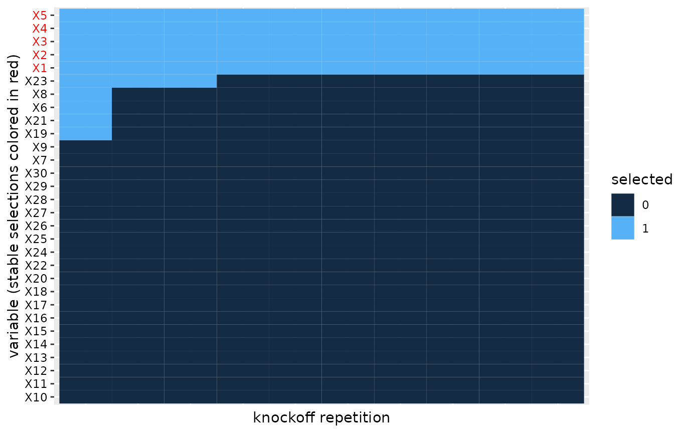

Survival analysis with knockoffs
Matthias Kormaksson, Kostas Sechidis
November 27, 2023
survival-analysis-with-knockoffs.RmdIntroduction
In this vignette we demonstrate how to do knockoff variable selection in the context of censored time-to-event data. We consider the following Cox regression model for knockoff variable selection for time-to-event data:
\[\begin{align} \lambda(t) = \lambda_0(t) \exp \left(X \beta + \tilde{X} \tilde{\beta} \right), \end{align}\]
where \(\lambda(t)\) is the hazard function corresponding to a censored time-to-event response \(T\) and \(\lambda_0(t)\) is the baseline hazard. The matrix \(X\) is the design matrix corresponding to the covariates of interest, while \(\tilde{X}\) represents a knockoff copy of \(X\).
Knockoff variable selection in Cox regression involves the following steps:
- Simulate a knockoff copy \(\tilde{X}\) of the original covariates data \(X\).
- Compute feature statistics \(W_j=|\beta_j|-|\tilde{\beta}_j|\) from the aggregated Cox regression with covariates \(X\) and \(\tilde{X}\). Large, positive statistics \(W_j\) indicate effect of \(X_j\) on hazard rate.
- For FDR control use the knockoffs\(+\) procedure to select variables \(j\) that fulfill \(W_j \geq \tau_+\) where \[ \tau_+ = \underset{t>0}{\operatorname{argmin}} \left\{\frac{1 + |\{j : W_j \leq t\}|}{|\{j : W_j \leq t\}|} \leq q\right\}. \] This workflow selects variables associated with response with guaranteed control of false discovery rate \(FDR \leq q\).
Data generation
In this section we will simulate a toy data set with a known truth. In particular, we will simulate a set of covariates \(X\) and survival times under censoring that are associated with some of the \(X\)’s through a Cox regression model.
Simulation of \(X\): The
generate_X function simulates the rows of an \(n \times p\) data frame \(X\) independently from a multivariate
Gaussian distribution with mean \(0\)
and \(p \times p\) covariance matrix
\[
\Sigma_{ij} = \left \{
\begin{array}{lr}
1\{i = j\}, & \text{Independent,} \\
\rho^{1\{i \neq j\}}, & \text{Equicorrelated,} \\
\rho^{|i-j|}, & \text{AR1},
\end{array}
\right.
\] where \(p_b\) randomly
selected columns are then dichotomized with the indicator function \(\delta(x)=1(x > 0)\).
# Generate a 2000 x 30 Gaussian data.frame under equi-correlation(rho=0.5) structure,
# with 10 of the columns dichotomized
set.seed(1)
X <- generate_X(n=2000, p=30, p_b=10, cov_type = "cov_equi", rho=0.5)The covariance type is specified with the parameter
cov_type and the correlation coefficient with
rho. Each column of the resulting data.frame is either of
class "numeric" (for the continuous columns) or
"factor" (for the binary columns).
Simulation of event and censoring times: The function
simulWeib simulates survival times \(T\) from a Cox regression model
\[
\lambda(t) = \lambda_0(t) \exp \left(X \beta \right),
\] with Weibull baseline hazard: \[
\lambda_0(t) = \lambda_0 \rho t^{\rho-1}
\] where \(\lambda_0 > 0\)
and \(\rho > 0\) are scale and shape
parameters, respectively. The censoring times \(C\) are randomly drawn from an exponential
distribution with a small (fixed) rate \(\lambda_C=0.0005\), which results in very
mild censoring. Once \(T\) and \(C\) have been simulated the function sets
time = min(T, C) and event = 1{T < C}:
simulWeib <- function(N, lambda0, rho, lp) {
lambdaC = 5e-04
v <- runif(n = N)
Tlat <- (-log(v)/(lambda0 * exp(lp)))^(1/rho)
C <- rexp(n = N, rate = lambdaC)
time <- pmin(Tlat, C)
status <- as.numeric(Tlat <= C)
survival::Surv(time = time, event = status)
}In this toy data set we assume that the first five covariates affect the hazard \(\lambda(t)\) through the linear predictor \(\ell_p=X\beta\) and then simulate the survival object:
lp <- generate_lp(X, p_nn=5, a=2)
set.seed(2)
y <- simulWeib(N=2000, lambda = 0.01, rho = 1, lp = lp)Knockoff (feature) statistics in Cox regression
Let’s now use the knockoff.statistics function to (a)
simulate independently \(M\) knockoffs
\(\tilde{X}_k\), \(k=1,\dots,M\), (b) fit the aggregated Cox
model to above data: \[\begin{align}
\lambda(t) = \lambda_0(t) \exp \left(X \beta^{(k)} + \tilde{X}_k
\tilde{\beta}^{(k)} \right),
\end{align}\] for each of the \(k=1,\dots,M\) knockoff copies. Then finally
calculate (for each knockoff \(k\)) the
corresponding knockoff (feature) statistics \(W^{(k)}_j =
|\beta_j^{(k)}|-|\tilde{\beta}_j^{(k)}|\).
set.seed(123)
W <- knockoff.statistics(y, X, type="survival", M=10)
head(W)
#> W1 W2 W3 W4 W5 W6
#> X1 1.68417085 1.64920854 1.71294466 1.7130229 1.72623754 1.76959115
#> X2 1.78733106 1.79439991 1.82809127 1.7953936 1.80803144 1.83159085
#> X3 1.74840772 1.75951906 1.80838883 1.7588122 1.75238267 1.80715192
#> X4 1.72546124 1.67708322 1.78064956 1.7258980 1.74789299 1.73426786
#> X5 1.75046697 1.74950657 1.82076525 1.7650704 1.78235237 1.83577773
#> X6 -0.01921297 -0.01275992 0.01461379 0.0156508 0.01742504 -0.01154548
#> W7 W8 W9 W10
#> X1 1.73428009 1.72061443 1.73521643 1.746217213
#> X2 1.80838108 1.77398820 1.80714829 1.804438638
#> X3 1.76401959 1.74515206 1.77405806 1.829114226
#> X4 1.72333722 1.71313170 1.72602257 1.779804692
#> X5 1.78468873 1.77687033 1.79819418 1.805816339
#> X6 0.00387067 0.01255798 0.01473674 -0.003842216The output is a data.frame whose columns are the \(M\) knockoff statistics. In the above we
have used (as a default) parallel computing via the package
clustermq (see: User
Guide - clustermq).
Variable selection via multiple knockoffs
We simulated \(M = 10\) feature
statistics in order to evaluate robustness of the knockoff variable
selection process, each time simulating a new knockoff of
X. To calculate which variables will be selected for each
of these knockoff statistics we use the variable.selections
function. This function takes the knockoff statistics W as
input and additionally specifies the error.type="fdr"
(default), "pfer" (per family error error), or
"kfwer" (k-familywise error rate) and the corresponding
target error level.
S = variable.selections(W, level = 0.2, error.type="fdr")
head(S$selected)
#> S1 S2 S3 S4 S5 S6 S7 S8 S9 S10
#> X1 1 1 1 1 1 1 1 1 1 1
#> X2 1 1 1 1 1 1 1 1 1 1
#> X3 1 1 1 1 1 1 1 1 1 1
#> X4 1 1 1 1 1 1 1 1 1 1
#> X5 1 1 1 1 1 1 1 1 1 1
#> X6 0 0 0 1 0 0 0 0 0 0
S$stable.variables
#> [1] "X1" "X2" "X3" "X4" "X5"In a nutshell the function will both calculate individual variable
selections (for each knockoff replicate) and a stable set of variables
that are selected most frequently among the M replicates.
For FDR-control the stable variables are calculated using the heuristics
in The multiple knockoffs
filter procedure, while for the other two error types
("pfer" and "kfwer") we simply choose all
variables selected more than thres*M times, where
thres is an optional parameter of the
variable.selections function (thres=0.5 by
default).
Heatmap of multiple variable selections
In order to evaluate the robustness of the knockoff selection procedure we can visualize a heatmap of the selections across the knockoff replicates.
plot(S) We apply co-clustering of the rows and columns of the heatmap, which identifies blocks of similarities in the binary selections. We then order the blocks according to increasing mean number of selections. This helps with aesthetics, but also helps visualize the most important variables that should tend towards the top of the heatmap.
Appendix
A. The multiple knockoffs filter procedure for FDR-control
(Kormaksson et al. 2021) introduced a heuristic algorithm for selecting stable variables from multiple independent knockoff variable selections.
Let \(\tilde{X}_1, \dots, \tilde{X}_B\) denote \(B\) independent knockoff copies of \(X\). For each knockoff copy \(b\) run the knockoff filter and select the set of influential variables, \(S_b \subseteq \{1,\dots,p\}\). We propose the following heuristics to select a final set of variables:
- Let \(F(r) \subseteq \{1,\dots,p\}\), where \(r \in [0.5, 1]\), denote the set of variables selected more than \(r \cdot B\) times out of the \(B\) knockoff draws.
- Let \(S(r)=\underset{b}{\rm mode}\{F(r) \cap S_b\}\) denote the set of selected variables that appears most frequently, after filtering out variables that are not in \(F(r)\).
- Return \(\hat{S} = S(\hat{r})\), where \(\hat{r} = \underset{r \geq 0.5}{\operatorname{argmax}} |{S(r)}|\), i.e. the largest set among \(\{S(r):r \geq 0.5\}\).
The first step above essentially filters out variables that don’t appear more than \((100\cdot r)\%\) of the time, which would seem like a reasonable requirement in practice (e.g. with \(r=0.5\)). The second step above then filters the \(B\) knockoff selections \(S_b\) accordingly and searches for the most frequent variable set among those. The third step then establishes the final selection, namely the most liberal variable selection among the sets \(\{S(r):r \geq 0.5\}\).